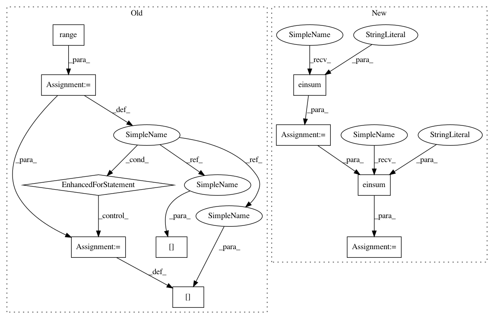

4115e274df7fceb5aa8810fd40b93b987885160b,scipy/spatial/transform/rotation.py,,compute_euler_from_dcm,#Any#Any#Any#,17
Before Change
rtc = rt.dot(c)
ct = c.T
o = np.empty_like(dcm)
for ind in range(num_rotations):
o[ind] = rtc.dot(dcm[ind]).dot(ct)
// Step 4
angle2 = lamb + np.arccos(o[:, 2, 2])
// Steps 5, 6
eps = np.finfo(float).resolution // ~1e-15
After Change
rtc = rt.dot(c)
ct = c.T
o = np.empty_like(dcm)
res = np.einsum("ij,...jk->...ik", rtc, dcm)
o = np.einsum("...ij,jk->...ik", res, ct)
// Step 4
angle2 = lamb + np.arccos(o[:, 2, 2])
In pattern: SUPERPATTERN
Frequency: 3
Non-data size: 10
Instances
Project Name: scipy/scipy
Commit Name: 4115e274df7fceb5aa8810fd40b93b987885160b
Time: 2018-06-30
Author: adibhar97@gmail.com
File Name: scipy/spatial/transform/rotation.py
Class Name:
Method Name: compute_euler_from_dcm
Project Name: geomstats/geomstats
Commit Name: ca7b264f69db393e3d1c704a20b4f22047d1998f
Time: 2018-05-08
Author: ninamio78@gmail.com
File Name: geomstats/spd_matrices_space.py
Class Name:
Method Name: group_exp
Project Name: geomstats/geomstats
Commit Name: 31d8076c8dd31c28054e820571ef38234950e101
Time: 2018-05-08
Author: ninamio78@gmail.com
File Name: geomstats/spd_matrices_space.py
Class Name:
Method Name: group_log